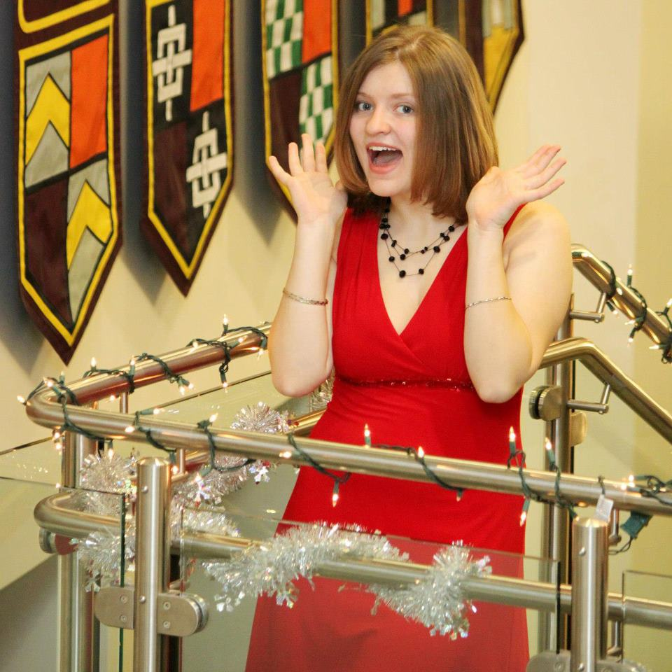
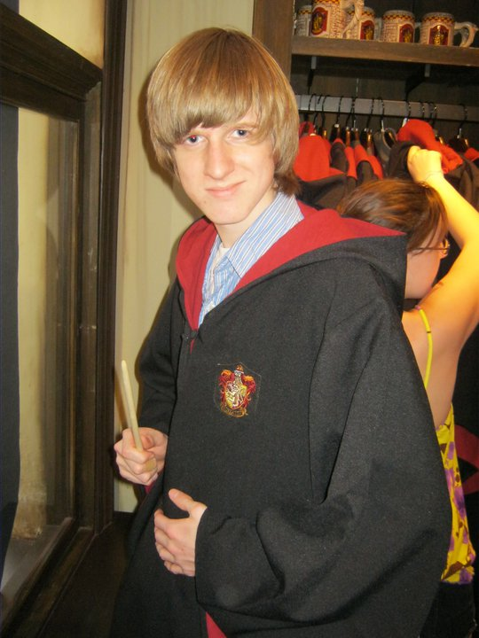
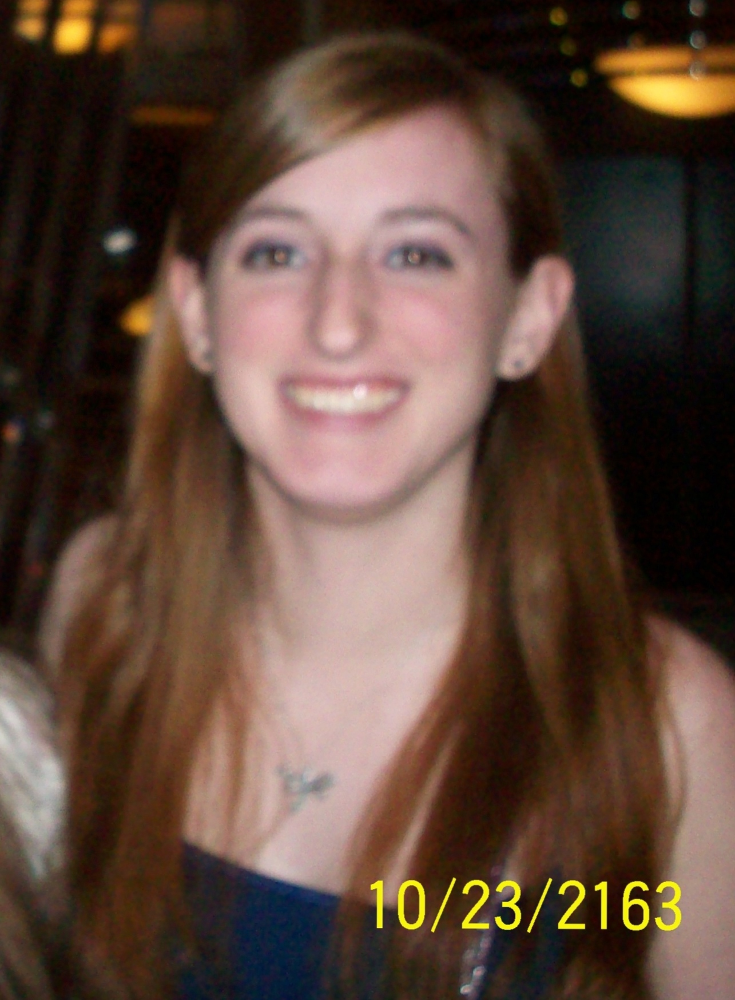
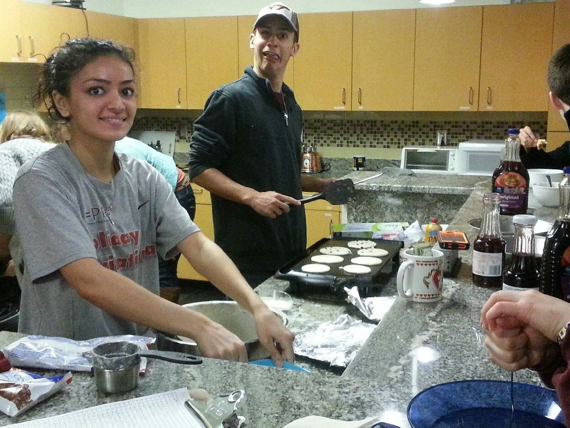
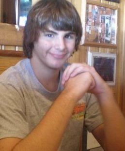
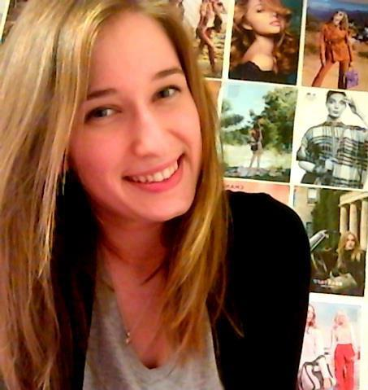
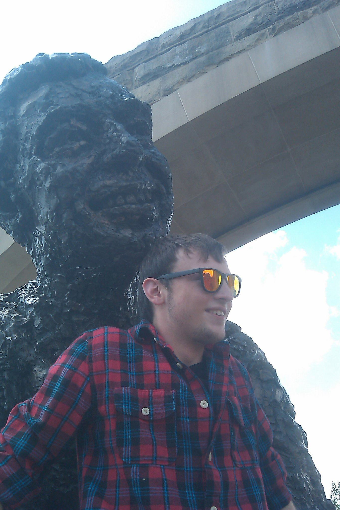
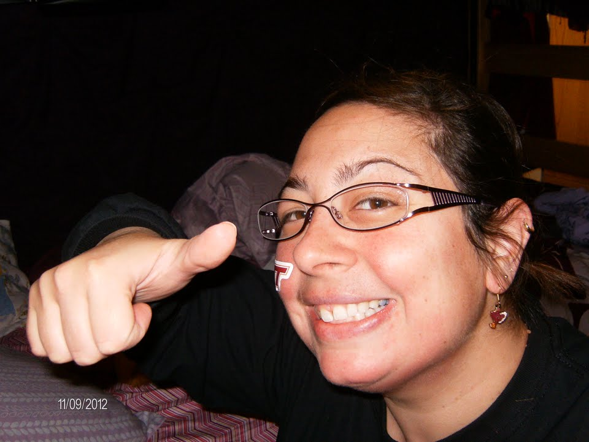
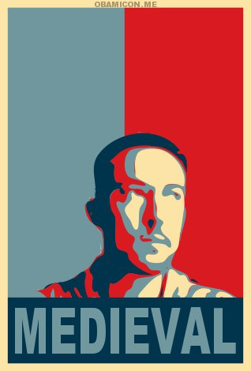

-
Kelsey Jo Starr - President
Helllllllo Hickory! My name is Kelsey Jo Starr, and I was the president of Hickory. I am interested in a dual degree in psychology and political science, with minors in history and Russian.I’m a member of Pi Sigma Alpha, psychology club, and I’m heavily involved with the Virginia Tech Newman organization. I love ballroom dance, video games, Lord of the Rings, and getting to know everyone in my house.
-
Colin Shea-Blymyer - Vice President and Representative to the College Council
Colin Shea-Blymyer, House Vice President, House Representative to College Council and Council Representative for West A.J. Colin iss a Computer Science student, deeply interested in artificial intelligence. Colin is also an actor, having taken part in many productions at home and a few at Tech. He enjoys reading, gaming, breathing and living.
-
Nicole Hatch - Secretary
Hey everyone! My name is Nicole Hatch and I was the Hickory secretary. I’m a mechanical engineer from Boston, Massachusetts. Some of my favorite things are watching movies, running and hockey (GO BRUINS!!). I love going to Tech hockey and football games.
-
Natalie Brandmueller - Social Chair
Hi I'm Natalie Brandmueller and I was your social chair! I love anything pink and glittery. I was a varsity cheerleader in high school. I love reading, especially anything by John Green. Black Ops is my favorite xbox game but I’m also a fan of Bioshock and Left 4 Dead. I am a Mining and Minerals Engineering student with a Green Engineering minor. I was also the WAJ rep for RHF.
-
Joe Jajoine - Healthy Hokie
Hey y'all, a little bit about my job on the council is that I planned the athletic events for the house including the Hickory House Annual Tailgate and other sporting activities.
-
Maha Malik - Treasurer
My name is Maha Malik and I was Hickory House’s Treasurer. I’m from northern Virginia and I graduated from Centreville High School. In high school, I was a part of lots of clubs/organizations/sports and etc. but my favorite was Track. I loved to race but I didn’t continue it into college. Instead I found many other things that I love to do and be a part of at Virginia Tech, like being part of West AJ! The transition from high school to college was very exciting! Freshman year was a pretty good year for me because I made many close friends. I encourage everyone, even if it’s not your freshman year, to put yourself out there and make friends!
-
Richard Howell - Webmaster
Richard Howell was the first Webmaster for the Hickory House and helped lay the foundation of the website. Richard is from the town of King George county and enjoys playing Video Games like World of Warcraft and League of Legends. Richard also enjoyed swimming and playing soccer. Richard studied Computer Science here at Virginia Tech.
-
 Victoria Myers - Networker
Victoria Myers - Networker
Hi everyone! I am Victoria Myers your networker for Hickory House. I am a architecture major with a minor in landscape architecture. I love having fun and meet new people. Some fun and random things I love are Despicable Me, pink and zebra, shopping, the Steelers, and dance. I have been a dancer for 11 years. If I had free time anymore you can bet I'd be dancing or painting. I played some intramural sports here at Tech.
-
Jen Quievryn - Community Service / 2nd Floor RA(founding year)
Hey Hickorians, it’s me, Jen Quievryn, your loving RA and service chair! I just wanted to give you all some information about me and my responsibilities around West AJ. I am from Charlotte, North Carolina and I studied Fashion Merchandising. I was involved in a number of organizations including Chi Delta Alpha, the only service sorority on the Virginia Tech campus. Through Chi Delta Alpha, service opportunities in the New River Valley have been made accessible to me—and many of the service projects I participated in are also available to Virginia Tech students (like you guys!).
-
Tim Graham - Historian
-
Doreen Ciccariello - Graduate Resident Fellow
Hey Hickory! I was your Graduate Resident Fellow! I'm a Graduate Student in the Foreign Languages and Literature program, concentration Spanish. I want to teach Spanish at the college level. My role within the house was to foster a mentorship with the residents and help bring academics and college living together to optimize your college experience. How am I able to do this? Simple, just getting to know the residents of my house and sharing our experiences. I was also advisor to House Council and I worked with the RA staff.
-
Professor Matthew Gabriele - Associate Professor
Matthew Gabriele is an associate professor and Coordinator of Medieval & Early Modern Studies in the Department of Religion and Culture. He is also an associate faculty principal of Hickory House in the Residential College at West Ambler Johnston. He teaches on the European Middle Ages, Renaissance, Reformation, the Age of Discovery, and modern perceptions of the "medieval." His research is on issues of religion and violence in the medieval & modern worlds. He is married and has 1 son.
-
Robi Basu - 3rd Floor RA(founding year)
Rabi Basu is an Economics major who enjors Scrubs, Community, and jumping for "Enter Sandman" at the VT football games. Robi's dream job is being a marine biologist in the galapagos and a traveling dessert and food critic. He knew VT was right for him when he stepped on the campus and saw how gorgeous it was. The hokie community he saw was friendly and supportive, and he liked how many opportunities there was for sucess. He is glad he picked Virginia Tech and is proud to be a Hokie.
-
 Spencer - 1st Floor RA(founding year)
Spencer - 1st Floor RA(founding year)
This is blank until Spencer can be contacted for a bio